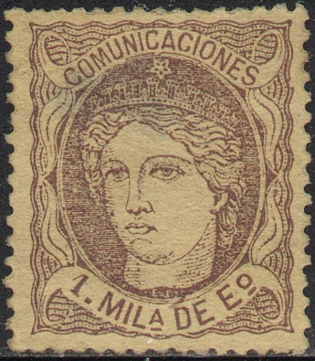
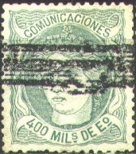
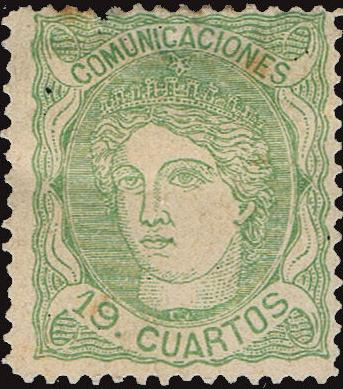
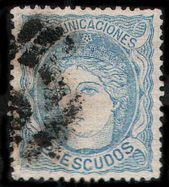
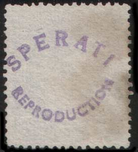
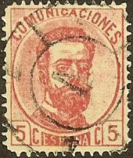
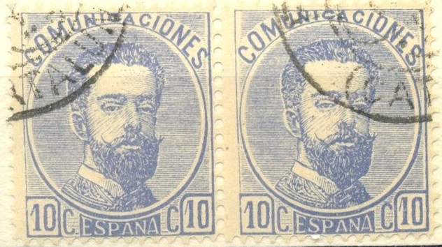
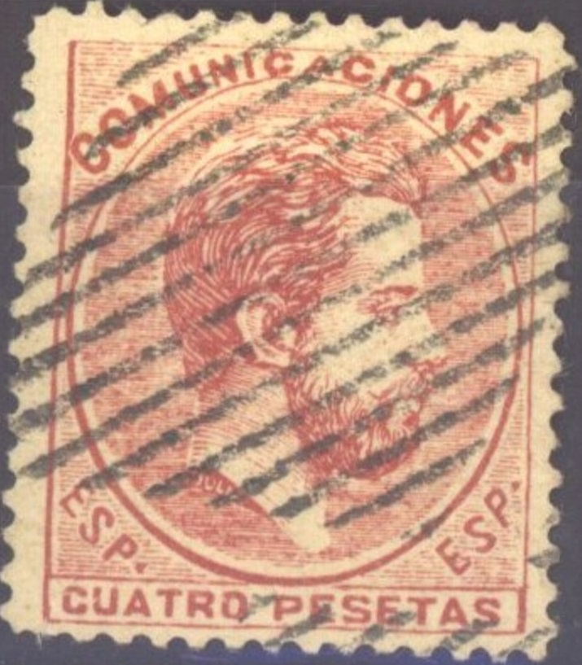

Return To Catalogue - Spain overview - 'Comunicaciones' (issued from 1874 to 1889) - Spain 'Comunicaciones' 1873
Note: on my website many of the
pictures can not be seen! They are of course present in the
catalogue;
contact me if you want to purchase it.

1 m violet 2 m black 4 m yellow 10 m red 25 m lilac 50 m blue 100 m brown 200 m brown 400 m green 1 E 600 m grey 2 E blue 12 Cu brown 19 Cu green
Value of the stamps |
|||
vc = very common c = common * = not so common ** = uncommon |
*** = very uncommon R = rare RR = very rare RRR = extremely rare |
||
| Value | Unused | Used | Remarks |
| 1 m | * | ** | |
| 2 m | ** | *** | |
| 4 m | *** | *** | |
| 10 m | *** | ** | |
| 25 m | *** | ** | |
| 50 m | ** | c | |
| 100 m | *** | ** | |
| 200 m | *** | * | |
| 400 m | R | *** | |
| 1 E | RR | RR | |
| 2 E | RR | RR | |
| 12 Cu | R | * | |
| 19 Cu | RR | RR | |
These stamps with inscription "CORREOS" were issued for Spanish Antilles and Philippines. Typical cancels:

Stamps with 3 horizontal bars are cancelled after the selling period, and sold to dealers. Stamps with circular holes in it, are used telegraphically.
Characteristics of genuine stamps: The line below "COMUNICACIONES" is broken in two places; below the "U" and below the second "C". The wavy outer frame line is broken to the right of the "S" of "COMUNICACIONES". By the way: the Sperati forgeries also have these characteristics!


Postal forgeries of the 50 m value and 100 m value.
Postal forgeries of the 50 c exist with different perforations (corners!), rather badly printed on grey paper. They were used in almost all Spain. This postal forgery also exists imperforate.

Another postal forgery of the 200 m value. It was used in Madrid.
The color and perforation are slightly different from the genuine
stamp.
Forgeries to deceive collectors exist of the 1E600m, 2E and 19 c, examples:


Segui forgeries. Note that the star on
top of the crown is not symmetric. A few of them also with the
cancel "TOLOSA 24 MAR 68 SAN SEBASTIAN"

Another forgery, in my opinion, the first "I" of
"COMUNICACIONES" is slanting too much backwards.
Fournier also sold forgeries of the values 1.600 Esc, 2 Esc and 19 Cuartos.

(Fournier? the star on top of the crown is also not symmetric in
this forgery)

2 Escudos and 1.600 Esc forgeries as found in the Fournier Album.
Sperati made forgeries of these stamps:
 


(Sperati forgeries)
The paper, perforation and cancel are genuine on the above forgeries. The design of a lower valued stamp of the same series was removed by Sperati, he then printed the design on it. He made this forgery look like as if the cancel was on top. His forgeries were so good, that even experts were fooled. These forgeries are not very common, and highly sought after.
Distinguishing characteristics of the Sperati
forgeries:
1E600M:

Breaks in the upper left inner frame line
1) There is a small thickening of the line above
the "E" of "1 Eo 600 MILS"
2) The left eye (from our point of view) has a small line going
upwards
3) There are some breaks in the upper left inner frame line.
2Esc (Reproduction 'A'):
White dot in the "C" of "ESCUDOS"
(Reproduction 'A')
1) The left leg of the "U" of
"COMUNICACIONES" is broken at the top
2) The first wavy pattern in the upper right corner has a
coloured spot
3) There is a white dot in the "C" of
"ESCUDOS"
A 'Reproduction B' should exist, but I've never seen it.
19 Cuartos:
1) There is a very small white spot in the upper part of
the "S" of "CUARTOS"
2) The "A" of "CUARTOS" has a very small
coloured dot in its right leg
3) The "M" and "U" of
"COMUNICACIONES" have small dots (you really need a
microscope to see this!).
5 c red (1873) 6 c blue 10 c grey 10 c blue (1873) 12 c violet 20 c grey (1873) 25 c brown 40 c brown 50 c green


1 P lilac 4 P brown 10 P green
These stamps have perforation 14.
Value of the stamps |
|||
vc = very common c = common * = not so common ** = uncommon |
*** = very uncommon R = rare RR = very rare RRR = extremely rare |
||
| Value | Unused | Used | Remarks |
| 5 c | *** | *** | |
| 6 c | R | *** | |
| 10 c grey | RR | RR | |
| 10 c blue | * | * | |
| 12 c | *** | * | |
| 20 c | R | R | |
| 25 c | *** | *** | |
| 40 c | *** | ** | |
| 50 c | *** | *** | |
| 1 P | R | R | |
| 4 P | RR | RR | |
| 10 P | RR | RRR | |

Stamps with 3 horizontal bars are cancelled after the selling period, and sold to dealers.

Forgery of the 10 c in the wrong colour brown instead of blue.
The "C"s at both sides of the word "ESPANA"
are different from the genuine stamps



Rather blur forgery of the 4 P value. Possibly made by the same
forger (it appears to have the same cancel).
Fournier forgeries:



(Fournier forgeries of the lower values)

Block of 50 c imperforate Fournier forgeries, taken from a
Fournier Album.
(Imperforate row of 1 P Fournier forgeries)
The above 50 c stamp is a Fournier forgery. It bears the cancel "PUYCERDA 7 JUL 73 (CATALUNIA)" as it also can be found in 'The Fournier Album of Philatelic Forgeries'. Fournier made forgeries of the all values (Peseta values included). He also used the cancel "FIGUERAS 21 OCT 73 CATALUNA" as in the two 40 c forgeries above (see also image below). I have also seen the 25 c value with a very blotched cancel. He offers the cents values (9 stamps) for 2 Swiss Francs in his 1914 pricelist (as first class forgeries). The Peseta values (3 stamps) are also offered for 2 Swiss Francs (also first class forgeries). The first "O" of "COMUNICACIONES" is not flat at the bottom in this forgery. In the genuine stamps, the line just below the upper frameline, does not continue as much as the lines below it do. In the Fournier forgery, it continues as far as the other lines. I suspect the 6 c forgeries also to be Fournier forgeries (note the strange left '6').

A forgery of the 4 P stamp, possibly also made by Fournier (the
stamp has a FIGUERAS cancel). In all the genuine stamps I have
seen the "A" of "CUATRO" is situated well to
the left of the "." of "ESP.". However, in my
opinion, in Fournier's forgeries, this letter is situated almost
below the dot. The genuine Peseta stamps have a reinforcement in
the lower left corner; Fournier forgeries do not have this.


Fournier forgeries from a Fournier Album, unfinished imperforate
forgeries and perforted cancelled forgeries.
Forged Fournier cancels, reduced sizes
Sperati forgeries:
Sperati made forgeries of the 4 P and 10 P values (2 different version of the 10 P, Reproductions 'A' and 'B, although Reproduction 'B' might not have been released by Sperati).


Sperati forgery of the 4 P value with the distinguishing
characteristic: a rather large brown spot of ink just below the
chin of the King.
Example of a 10 P Sperati forgery:


Front and backside of this Sperati forgery, Reproduction 'A'
Zoom in of the bottom part of a Sperati forgery of the 10 P
value.
In the above forgeries of the 10 P the bottom of
the "D" of "DIEZ" is 'shaved off'. There is a
white dot in the right hand side of the "P", a break in
the bottom of the first "E" and the "S" is
badly done in the word "PESETAS" (see zoom-in).
The cancels and the paper are genuine (Sperati removed the image
of a genuine stamp and then reprinted it).
I've been told that this is a postal forgery, the "S"
of "COMUNICACIONES" is not as bent at the top as in the
genuine stamps.

Other postal forgery, note that "ESPANA" is in too thin
lettering.
For more stamps with inscription 'Comunicaciones' (issued from 1874 to 1889) click here or here for the 1873 issue.
Stamps - Briefmarken - Timbres-Poste - Postzegels - Francobolli - Estampillas
{kind=link}
{kind=link}
{kind=link}
{kind=link}
{kind=link}
{kind=link}